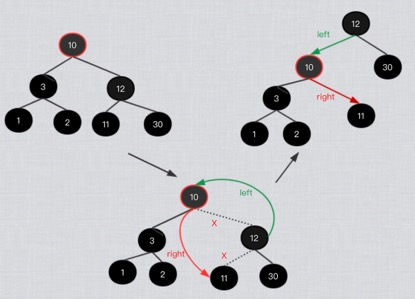
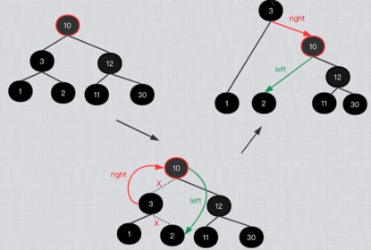

左旋与右旋
在红黑树调整之前，我们先了解一下左旋与右旋这 2 个神奇的操作：
左旋，如下图，左旋节点 10 的过程如下：
- 将旋转节点 10 变成了其右孩子 12 的左孩子；
将右孩子 12 的左孩子 11 变成了旋转节点 10 的右孩子；

左旋时，我们要关注的是旋转节点右孩子，而不是其左孩子；
右旋，如下图，仍然以 10 来进行，右旋节点 10 的过程如下：
- 将旋转节点 10 变成了其左孩子 3 的右孩子；
将左孩子 3 的右孩子 2 变成了旋转节点 10 的左孩子；

右旋时，我们要关注的是旋转节点的左孩子，而不是其右孩子；
左右旋总结：
- 神奇的操作，经旋转后，依然保留了二叉查找树的特性（左小，右大）；
- 从上图看，旋转只是影响其旋转节点的左或右子孩子，孙子就不要关注了；